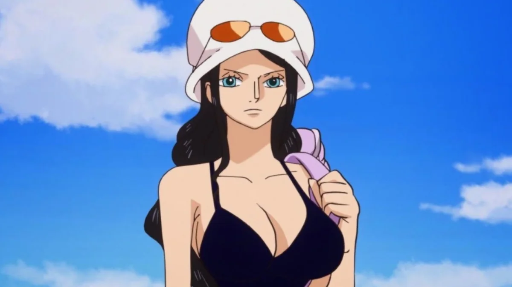

Monkey D. Luffy:
Luffy, un jeune garçon qui a mangé le fruit du démon
Gomu Gomu no mi, décide dès son plus jeune âge
qu'il deviendra le nouveau seigneur des pirates
Roronoa Zoro:
Roronoa Zoro le Chasseur de Pirates est un pirate,
un ex-chasseur de pirates et l'un des protagonistes de One Piece.
Il est le combattant de l'Équipage du Chapeau de Paille.
Il fut le premier membre à rejoindre l'Équipage du Chapeau de Paille
Nami:
Nami est une voleuse de pirate, les dépouillant avec ruse et adresse.
Elle rencontre Luffy et le rejoint dans son aventure.
Fait inhabituel pour elle qui déteste les pirates par dessus tout.
Usopp:
Usopp est le fils de Yasopp, un pirate qui fait partie de l'équipage du capitaine Shanks le roux.
Il grandit seul dans le village de Sirop sur East Blue avec sa mère.
L'absence de son père, et surtout le fait que celui-ci n'ait pu sauver sa mère,
morte de maladie, fit beaucoup de peine à Usopp.
Sanji:
enfant, Sanji travaillait comme apprenti cuisinier sur un navire qui fut attaqué par Zeff.
Sanji voulut combattre les pirates (les mômes ont le droit de rêver !)
ce qui impressionna Zeff, surtout quand il apprit qu'ils avaient le même rêve : All Blue !

Nico Robin:
À l'âge de 23 ans, Robin quitte West Blue et rejoint Grand Line.
À l'âge de 24 ans, elle rejoint l'organisation Baroque Works dirigée par Crocodile
qui a besoin d'elle pour décrypter des Ponéglyphes.
Elle reste dans l'organisation durant 4 ans et se protège du gouvernement
en étant sous les ordres d'un grand corsaire.

Tony Tony Chopper est le docteur de l'Équipage du Chapeau de Paille.

Franky est ingénieur naval et occupe le poste de charpentier.
Brook fut jadis le chef d'une troupe de gardes d'un royaume de West Blue et de cette première vie,
C'est un Homme-Poisson de l'espèce des Requins-Baleines.
Tony-Tony Chopper
Tony Tony Chopper est le docteur de l'Équipage du Chapeau de Paille.
Chopper est un renne qui a mangé le Hito Hito no Mi,
lui permettant de se transformer en humain. Il est originaire de l'Île de Drum,
ce qui fait de lui le premier membre de l'équipage du Chapeau de Paille
à être né sur La Route de tous les Périls.